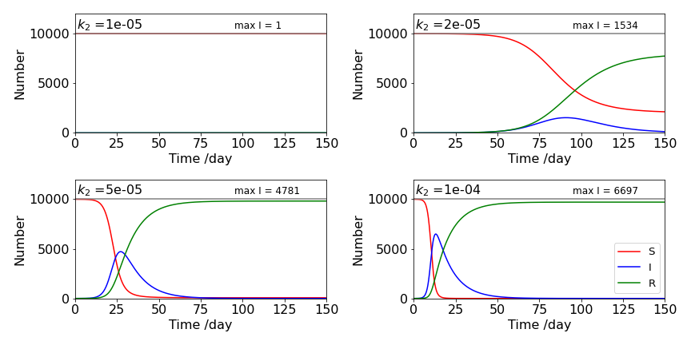

6 The phase plane, nullclines, stable points and separatrix. The pendulum, Euler-Cromer eqns, SIR model of disease, bacterial growth.
Contents
6 The phase plane, nullclines, stable points and separatrix. The pendulum, Euler-Cromer eqns, SIR model of disease, bacterial growth.#
# import all python add-ons etc that will be needed later on
%matplotlib inline
import numpy as np
import matplotlib.pyplot as plt
from sympy import *
init_printing() # allows printing of SymPy results in typeset maths format
plt.rcParams.update({'font.size': 16}) # set font size for plots
6.1 Introduction#
In the study of two-dimensional linear and non-linear differential equations, the phase plane, nullclines, and fixed points are very useful tools for analysing the equations before any numerical or algebraic calculation. The phase plane allows fixed points to be found, these are also called steady state, or equilibrium points and occur when \(dy/dt = dx/dt = 0\). Some examples are also given in Chapter 10. Closed orbits and limit-cycles can also be observed in the phase plane and are described shortly.
Written generally, pairs of differential equations are
where the functions \(f\) and \(g\) may contain terms in \(x,\; y\) and perhaps \(t\). For example,
6.2 The phase plane \(^2\)#
The phase plane is the plot of \(y\) vs \(x\) and is found by calculating \(dy/dx\) by using the chain rule. In practice, this means dividing the equation for \(y\) by that for \(x\); therefore the phase plane does not explicitly contain time. If the resulting equation can be integrated, the family of curves produced can be plotted for different values of the integration constant, which means for different initial values of \(y\) and \(x\). If the integration cannot be done analytically, then a numerical solution of the two initial equations has to be found and, again, \(y\) plotted vs \(x\) at various times until the entire phase plane is produced.
For example, if the equations governing the motion of a particle in a particular double-well potential, Fig. 13, are
calculating the phase plane means integrating
Separating \(y\) and \(x\) gives
which integrates to
and this is the equation describing this phase plane. The values of integration constant \(c\) depend on the initial energy of the particle. If it has sufficient energy, then the barrier will be surmounted and oscillation will occur between both wells. If not, the motion is restricted to one well only. The phase portrait is the collection of curves drawn on the phase plane with different initial conditions, in this case, different values of \(c\).
The stable, steady-state, or equilibrium points are found when the rate of change is zero, and are therefore found at
making fixed points at \(x=0,\;y=0\) and \(x = \pm 1,\; y = 0\). A more detailed analysis of fixed points in general shows that they may be stable, unstable or saddle points, see Jeffrey (1990) and/or Strogatz (1994).
A stable steady state has the property of returning to that state after a small perturbation to it is made, and clearly, the points (\(\pm 1,\; 0\)) are of this nature, Fig. 13 as they are at the bottom of the wells. The origin is a saddle point, and is not fully stable because moving in any direction from the origin the gradient is negative, except moving up or down the y-axis.
\(^2\) The name is historical and apparently was originally used in dynamics as the plane containing position \(x\) and momentum \(mdx/dt\) of a object as it moved under the influence of a force.
6.3 Isoclines and nullclines#
The equation produced when the rate of change is zero is sometimes called an isocline or nullcline. Just as on an incline we move up, or on a decline down, an isocline means that the gradient is always the same and must therefore be a constant number, and a contour path is followed in the phase plane. A nullcline occurs when this constant is zero The nullclines are
which in this case are both straight lines. Isoclines are the lines when
where \(a\) is some constant. Assuming that \(y\) is plotted vertically and \(x\) horizontally, the ‘flow’ or vector showing the direction of change, is always horizontal at each point along the nullcline, \(dy/dt = 0\), no matter what its curve is, and vertical on the nullcline \(dx/dt = 0\). The nullclines also partition the phase plane into areas where the derivatives have different sign; exactly what these are depends upon the particular equations. Figure shows the phase portrait with isoclines at different \(c\) values and the nullclines, which are dotted. The figure-of-eight curve is the separatrix and, in this example, is the point when the particle has just enough initial energy to cross the barrier separating the region of oscillation in one well from motion over the barrier, and hence, motion between both wells. When the particle is placed in the bottom of either well, it has zero potential and zero kinetic energy. If it is not pushed, it will remain in this stable state at (\(\pm 1, 0\)) which are the points on the axis marked with a red dot.
Finally, in this short introduction to the phase plane, it must be remembered that although the phase plane equation 37 does not explicitly contain time, \(x\) and \(y\) are still functions of time and that time passing on the phase plane is not measured by equal \(x\) and \(y\) motion, but in a very non-linear manner. This can only really be observed by plotting pairs of \(x\) and \(y\) coordinates on the phase plane at various times after solving the coupled equations.
Figure 13. Example of a phase - plane with a few contours (isoclines) making up the phase portrait. The potential energy profile has barrier with a maximum energy of zero. The motion of a particle starting at different points is shown on the right. The \(dy/dt = 0\) nullclines are shown dotted, the other nullcline, \(dx/dt = y = 0\) is the x-axis. The arrows show the direction of motion around the phase plane. The separatrix is the light blue ‘figure of eight’ and passes through the origin.
6.4 Non-linear equations: the pendulum#
A rigid pendulum with a heavy bob at its end can move in two ways. When the energy is small, it will oscillate about the vertical in a good approximation to simple harmonic motion, and when the energy is large enough it will rotate continuously in the vertical plane. If the displacement from the vertical is not small, the motion is non-linear and the equation of motion has no exact analytical solution. If it is assumed that the pivot holding the pendulum is frictionless and that no air or other resistance hinders the motion, then the equation of motion is
This equation is described as non-linear because the angle \(\varphi\) does not change linearly but as \(\sin(\varphi)\). A derivation of is given in Chapter 10.
The variable \(\varphi\) is the angle in radians away from the vertical, and \(\omega\) is an angular frequency defined as
where \(g\) is the acceleration due to gravity and \(L\) the length of the pendulum. The frequency \(\omega\) is the frequency that the pendulum has when it undergoes infinitesimally small oscillations. The mass of the pendulum is \(m\); it is used to calculate forces but cancels out in the result.
When the angular displacement is small expanding the sine as a series and retaining the first terms as the next terms is \(\varphi^3/3!\) and will be insignificant, gives, \(\sin(\varphi) \to \varphi\), the the pendulum’s motion is sinusoidal and that of the simple harmonic oscillator of frequency \(\omega\). The equation of motion becomes
which has the general solution,
where \(c_1,c_2\) are integration constants and depend on initial conditions. These are chosen to be \(\varphi (t)=\varphi_0\) and \(d\varphi/dt=v_0\) at \(t=0\). The equations become
which after finding the constants produces
Naturally, different initial conditions would lead to different \(c_{1,2}\).
Much of the dynamics of the real pendulum can be understood from the phase plane (\(\varphi,\; d\varphi/dt)\) which can be calculated easily if the equation of motion is split into two; the first gives the angular velocity \(v\), the second the angular acceleration or rate of change of velocity,
The equilibrium or steady state point when the derivatives are zero is clearly \(v = 0\) and \(\omega^2 \sin(\varphi) = 0\), which will occur when \(\varphi = 0, \pm n\pi\) with \(n = 1,\, 2 \cdots\). The nullclines are zero because only \(v\) or \(\varphi\) occur in each equation; the isoclines are found when the derivative is a constant \(k\), whose values you can choose. In this case,
are the isoclines. The phase plane is obtained by first using the chain rule to give
and then variables \(v\) and \(\varphi\) can be separated and the equation integrated to give
where \(c\) is a constant of integration. This constant will be determined by the starting conditions; these are the angle that the pendulum is released from and its angular velocity at the point of release. If the initial velocity is \(v_0\) and the release angle \(\varphi_0\) then the integration is
which produces
and this is shown in fig 14.
(i) The Separatrix#
The line crossing through \(\varphi/\pi=\pm 1\) on the abscissa, is called the separatrix; this is produced in this example when the integration constant \(c = 1\) if \(\omega = 1\). At all points between the separatrixes, the pendulum does not complete more than one revolution, i.e. oscillates back and forth, and the motion appears as closed curves in the figure. If the pendulum starts from a stationary position at any angle except zero, up to a fraction short of \(\pi\) radians, a position almost upside down, it will then swing, ad infinitum, to a similar position on the other side and then back again; recall that there is no friction term in the equations. If the pendulum starts exactly upside down and also isn’t given a push, i.e. initial angular velocity is zero, then it should remain upside down for ever in this metastable state. However, no matter what angle the pendulum is in initially, if it is given a sufficient push and acquires energy in excess of \(2mgL\), then it can repeatedly rotate though 360\(^\mathrm{o}\). This is shown on the phase plane by the lines above the separatrix that do not cross the horizontal \(\varphi/\pi\) axis.
The direction of the motion can also be determined from the plot, starting at \(\varphi/\pi = 1/2\) or 90\(^\mathrm{o}\), and at zero initial velocity, the pendulum loses potential energy and gains kinetic energy. The angle decreases as the pendulum moves towards its lowest point; this means that the velocity is negative and becomes increasingly so, reaching its largest negative value when the pendulum is pointing vertically down. The motion is therefore clockwise around the closed curves as shown by the arrows on the plot. The motion continues forever, because energy is conserved in this model of the pendulum.
Figure 14 Phase plane, angle vs velocity for the pendulum with \(\omega = 1\) and various initial conditions. The separatrix are the lines crossing at \(\varphi/\pi = \pm 1\), they separate regions of oscillation, inside the closed curve, from complete rotation of the pendulum.
The change in angle and velocity with time can be found by numerically solving equations 39 as shown in Fig. 15 using the method outlined in Algorithm 14 with change in notation from \(x,\,y\) to \(v,\,\varphi\),
dphidt= lambda v : v
dvdt = lambda phi : -omega0**2*sin(phi)
and changing the steps in the loop of the Euler algorithm to (commented out to show)
#v = v + h*dvdt(phi)
#phi = phi + h*dphidt(v)
#t = t + h
An exact algebraic solution is only possible when the angle is small and \(\sin(\varphi) \to \varphi\), which is the harmonic oscillator and has a frequency \(\omega\) and a period of 1/\(\omega\) seconds. When the starting angle is not small, the angular motion is not purely sinusoidal, as may be seen in the figure, but spends longer near to the turning points at the top of the swing.
Figure 15. Angle (radians) and velocity (radians/sec) vs time of the non-linear pendulum, with \(\omega = 1,\;v_0=0\) and an initial angle of \(8\pi/9\). Notice that the velocity is zero when the potential energy is a maximum. This is when its angle is greatest or smallest and vice versa.
6.5 Euler–Cromer equations#
Although the Euler method will work well in all our examples, it is not necessarily the best method to use for oscillating systems, such as the pendulum, because energy is not conserved that well. By changing the algorithm as below then the error in the energy becomes proportional to \(\Delta t^3\) which is a significant improvement over \(\Delta t\) when the step size is small. The angle is calculated as \(\mathtt{phi= phi + h*v}\) instead of \(\mathtt{phi= phi + h*dphidt}\) as in the Euler method, Algorithm 14. See Gould et al. (2007) for more details of this and related methods.
# Algorithm: Euler Cromer modifications
def EulerCromer(dphidt, dvdt, phi0, t0, maxt, omega):
v0 = 0.0
n = 1000
Eulerv = np.zeros(n,dtype=float)
Eulerphi = np.zeros(n,dtype=float)
dtime = np.zeros(n,dtype=float)
h = (maxt-t0)/n # time step
v = v0 # initial values
phi = phi0
t = t0
Eulerv[0] = v0
Eulerphi[0] = phi0
dtime[0] = t0
for i in range(1,n):
v = v + h*dvdt(phi,v,t)
phi = phi + h*v
t = t + h
Eulerv[i] = v # save values
Eulerphi[i] = phi
dtime[i] = t
pass
return Eulerv,Eulerphi,dtime
#---------
7 The SIR model describes the spread of diseases#
A very interesting, and relatively straightforward example of coupled equations is the spread of an infectious disease, because, besides being intrinsically interesting, especially during the Covid19 epidemic, it allows a clear illustration of a number of features such as the phase plane and nullclines.
An epidemic is defined as the number of infected persons, increasing with time to a number above those initially infected. Kermack & McKendrick (1927), were the first to describe a realistic disease model, which they used to study the spread of a plague on the island of Bombay in 1905/6. In the SIR model, one or more infected persons are introduced into a community where all are equally susceptible to the disease. The model assumes, first, that the disease spreads by contact one to another; each person runs the course of the disease and then cannot be re-infected; and, secondly, that the duration of the infection is short compared to an individual’s lifetime, so that the total number of people is constant. Finally, the number of individuals is fixed once the infection has begun; therefore this model only describes infection in a closed community and is called a compartmentalised model. This is called the S-I-R model, because individuals are either susceptible (S), infected (I), or removed (R). The scheme is
and the aim is to calculate how R, S, and I change with time. In doing so we shall set up a set of rate equations and suppose that the numbers of individuals involved is sufficiently large that the integration is valid. In the case of Covid-19 the numbers are so large that this should not present a problem.
The first step describes the transmission of the infection, and the second, the recovery from infection, hence, the number infected I must reach zero at long times as the infection ends. The susceptible persons become infected by reacting with someone who is already infected with a rate constant \(k_2\). In chemical terms, the rate of such a second-order reaction is \(k_2[S][I]\), supposing that \([S]\) and \([I]\) are concentrations. The second step, infected to removed, has a rate constant \(k_1\), the reciprocal of which is the average time that an individual once infected takes to move into the removed class; the rate for this is \(k_1[I]\). Out of the constant total number of individuals, \(N = S + I + R\); the number \(R_0\) before the infection starts are those that are immune and clearly at least one infected person has initially to be present. The second equation shows that given time, all individuals will end up in the removed class R, and play no further part in the infection, being immune, isolated, or dead. In this model, the epidemic is assumed to run its course without the intervention of medication, which, given at random times to different individuals, would prematurely cause its end.
If S, I, and R were chemical species, the scheme above would represent a quadratic autocatalytic reaction where R is the product that takes no further part in the reaction. To start the reaction, some initial amount of species I has to be present.
7.1 Rate equations#
The rate equations for scheme 40 are
where \(S\) and \(I\) represent the number of individuals (or the concentration of chemical species in an autocatalytic reaction). The initial number infected is \(I_0\), those susceptible \(S_0\), and removed \(R_0\). The total number of individuals is a constant \(N\), and, because of this, the last differential equation is not needed because \(R\) can be calculated by subtracting from \(N\) the amount of \(S\) and \(I\) at any time. The rate constants are \(k_2\), the spreading rate constant and \(k_1\) the removal rate constant, and have units of number\(^{-1}\) time\(^{-1}\) and number time\(^{-1}\) respectively. By writing down rate equations, it is implicitly assumed that the number of individuals present is large and can be a continuous variable, not an integer, as is really the case. The model described so far assumes that all infected persons recover but instead many may die as we have seen with Covid19. To model this an extra rate constant can be added to \(k_1\to k_1+k_D\) and then the term \(dD/dt=k_DI\) included. The fraction that die is \(k_1/(k_1+k_D)\), a number which will normally be known. Monte Carlo methods to integrate and simulate these equations without using calculus are shown in Chapter 12 in Q9 and Q16 and their answers.
Before the equations are numerically integrated, a complete analytical solution not being possible, some analysis of the problem can still be carried out. The actual values of the constants are important if a real disease is to be modelled, and before trying to fit the data, it is necessary to know what range of parameters will produce an epidemic and what the expected populations will look like.
Intuitively, scheme 40 suggests that the number infected I, which is initially small (for instance, one person), increases rapidly, passes through a maximum, then slowly decays away. However, this will occur only if \(k_2S_0 \gt k_1\) because when S is large, I is initially formed more rapidly than it is consumed. If the opposite is true, then I is consumed more rapidly and its population cannot become large and no epidemic occurs. To be quantitative, let \(R_R = k_2S_0/k_1\) be defined as the reproductive ratio,\(^\dagger\) which is the number of secondary infections caused by one infected person if all the population is equally susceptible. An epidemic must ensue if the reproductive ratio is greater than one, because more individuals will become infected with time. This can also be appreciated by examining the rate of change of I in the second of equations 41 at
then \(dS/dt \gt 0\) and an epidemic will occur.
Typical values for the reproductive ratio are smallpox = 4; mumps = 5; German measles (rubella) = 6; measles = 12; malaria \(\approx\)100, (see Britton 2003), Covid-19 \(gt 3, \lt 9\) (Wikipedia).
( \(^\dagger\) Many texts call the reproductive ratio \(R_0\), which is unfortunately confusing with \(R_0\), the initial number in the removed class.)
7.2 The SIR phase plane#
A graph of \(I\) vs \(S\) is the phase plane. The phase plane shows how the number of infectives \(I\) and susceptibles \(S\) change with time, even though time is only implicit on the graph. The relationship between I and S is found by using the chain rule
and then integrating:
Integrating with limits \(I_0,\;S_0\) gives
which produces
where the initial values have been substituted with \(I_0 + S_0 = N\); at \(t = 0,\; R = 0\). Next, dividing by \(N\) to make the calculation independent of the number of individuals produces
where the notation is \(I_N = I/N\) and similarly for \(S_N\). The graph of \(I_N\) vs \(S_N\) is shown in Fig. 16 at different values of \(S_0/N\), which is the fraction initially susceptible. Time does not explicitly appear in this equation, but this does not mean that the curves are time independent; far from it, because S and I both depend on time. The curves, equation 42, must start at the line \(S_N +I_N =1\) , or \(S+I=N\), which is the diagonal line in Fig.16, because no \(R\) (removed class) individuals are present initially, and must move to the left as time progresses. At very long times the fraction infected must become zero.
Figure 16 Phase plot of equation 42. Different fractions of initially susceptible individuals \(I_N\) are shown calculated with \(S_N^{max} = 1/3\). An epidemic occurs when a curve starts to the right of \(S_N^{max}\). The arrow shows the direction of change with time and are horizontal on the (vertical) nullcline, \(S = k_1/k_2\), and vertical on the \(I = 0\) nullcline or horizontal axis.
The definition of an epidemic is that the number of individuals infected increases above those infected initially. In Fig. 16, the initial number infected is found where a curve touches the diagonal line, this is 0.25 with \(S_0/N = 0.75\), and \(I_N\) increases to \(\approx 0.4\) at its maximum and therefore, an epidemic may occur. Starting at \(S_0/N = 0.25\), the number infected decreases continuously and therefore an epidemic cannot occur. This simple approach indicates the importance of immunization and vaccination.
Immunizing or vaccinating a population reduces those susceptible, reducing \(S_0\) and the reproductive ratio \(R_R\), and so making an epidemic less possible. To the right of \(S_N^{max}\), Fig.16, an epidemic occurs, although it may not be severe if the initial value of \(S_0/N\) is close to the maximum; to its left the infection dies out. The turnover from epidemic to no epidemic is the point where \(S_N^{max}\) touches the diagonal. In the figure this occurs at \(I_N^{max} = 1 - 1/3 = 0.66\), meaning that \(66\)% immunization is needed to prevent an epidemic, which is a low value. With an infectious disease such as mumps or German measles, this value has to be \(\approx\) 0.85, meaning that 85% of the population has to be immunized to prevent an epidemic. Notice that not everyone needs to be immunized to prevent an epidemic; this is called herd immunity. A few individuals will by chance, never meet an infected person. An immunization/vaccination level of \(85\)% may be difficult to achieve in a population by voluntary mass vaccination. Should the level of immunization fall by only a small amount, the threshold at \(S_N^{max}\) may be crossed and an epidemic could occur. The number of individuals being immunized can suddenly fall, as happened in the UK in the late 1990’s and early in this century, due to poorly researched and inflammatory news media stories about the MMR vaccine for children. Some parents were reluctant to have their children vaccinated even though the risk of damage to health and even death were far greater than receiving the vaccine itself. Similar concerns have prevented many people from becoming vaccinated for Covid19 even though world-wide multiple millions of doses have been administered.
7.3 Steady states, isoclines, and nullclines#
In a rate equation, a steady state is produced when the rate of change is zero. In the SIR model this means
When molecules, or species in general, interact more than one steady state can be present, and not all of these are necessarily stable. The nullclines on the phase plane of the SIR model are particularly simple and are \(I = 0\), or along the S-axis, and \(S = k_1/k_2\), which is the vertical line at \(S_N^{max}\) and divides the region where the infected population increases from that where it decreases. The nullclines divide the phase plane into four areas, two areas are below the S-axis in this case, and, as negative number of individuals do not make any sense, only two of the four regions have any meaning. Assuming that I is plotted vertically and R horizontally, the ‘flow’ or vector, arrow Fig.16, showing the direction of change is always vertical at any point of the \(I\) nullcline, (horizontal axis), no matter what its curve is, and horizontal on the \(S\) nullcline when \(dS/dt = 0\). A steady state point is found where the nullclines meet, in the SIR model this is in the \(S\)-axis at the point \([k_1/k_2, 0]\) which is the foot of the vertical line \(S_N^{max}\).
7.4 Threshold for an epidemic and maximum and total number infected#
The maximum fraction of infected individuals is found when \(dI_N/dS_N = 0\), and this occurs at the constant value \(\displaystyle S_N=\frac{k_1}{k_2N}\) for any fixed \(N\). When \(dI_N/dS_N=0\) is reached, the infection has peaked and must start to decrease. The maximum fraction infected at any one time, is from 42
and, when multiplied by the total number \(I_0 + S_0\), gives the maximum number of hospital beds necessary to treat the infection. The maximum \(I_N^{max}\) may occur mathematically to the right of the diagonal line, Fig. 16, but clearly this is not physically possible, because the maximum value \(I_N\) can ever take is subject to the condition \(S_N^{max} + I_N^{max} \le 1\) and this occurs when \(R_R \ge 1\).
When the number (or fraction) of infected individuals is zero, there are still some who remain susceptible, see Fig. 16, who did not catch the disease even in an epidemic. This fraction is in the range \(0.02 \to 0.08\) in the figure, and is the extent of herd immunity. To be more quantitative, equation 42 describes \(I\) vs \(R\), and when \(t \to \infty\) then \(I\) is zero, giving
which is transcendental, and has to be solved numerically for \(S_N^\infty\), the fractional amount of \(S\) remaining at \(t \to \infty\). The Newton-Raphson method (Chapter 3.10) could be used to solve the equation. However, for a strong epidemic the fractional amount of \(S\) left at the end is very small; \(S_N^\infty \ll 1\) hence
When re-arranged,
When \(I_0/S_0 \ll 1\), for example, if only one person is infected initially, then \(\displaystyle S_N^\infty \approx e^{-k_2S_0/k_1}\). As a check, using the lowest curve in Fig. 16, which has been calculated with the ratio \(k_2N/k_1 = 3, S_0 = N - I_0\) and \(I_0/S_0 = 1/1000\), the fractional amount of \(S\) remaining at the end of the epidemic, calculated using the approximate formula, is \(S_N^\infty \approx 0.0498\) or 4.98% of the population were never infected. This is close to the exact value of 5.94%.
Finally, starting with equation 45 the total number infected is approximately
or \(N(1 - 0.0498)\) and this is the size of the infection, and in effect defines the total number of hospital beds needed over the course of the epidemic.
7.5 Sensitivity to rate constant \(k_2\)#
To understand some of the equations above, such as the maximum fraction infected, \(I_N^{max}\) it is easier to draw some graphs. Suppose that there are ten thousand susceptible persons, and that the disease starts to spread after one person is infected. What is the effect of the different rate constants? The rate of infection \(k_2\) here is key, i.e. the term \(k_2SI\) (eqn. 41) has a dramatic effect. If \(k_2\) is small, \(10^{-5}\), top left, (see the graphs below), the overall the epidemic does not progress even up to \(1000\) days. However, with \(k_2=2\cdot 10^{-5}\) (top right) the epidemic starts and \(\approx 1500\) persons are infected at the peak. Increasing \(k_2\) again to \(5\cdot 10^{-5}\) \(\approx 4800\) are infected. This rapid increase is rather dramatic and shows the effect of feedback, i.e. \( S+I \overset{k_2}\longrightarrow 2I \); Increasing \(k_2\) above \(10^{-4}\) has a smaller effect than when \(k_2=10^{-5}\) simply because so many are already infected. This behaviour shows how important the reproductive ratio is because this is proportional to \(k_2\).
Even with this simple model we can understand why wearing face masks is important because this effectively reduces \(k_2\). Isolating individuals, or being vaccinated, reduces the spread of disease also because the number of those susceptible is reduced and therefore so is the product \(k_2SI\) in eqn. 40.

Figure 16a. Populations of susceptibles S, (red line), infected I, (blue line) and recovered R, (green line) vs. time with different \(k_2\) values using \(k_1 =0.1\). The peaks of the infected curves are found using eqn. 43, \(I_N^{max}N\).
7.6 Calculating the time profile of an epidemic#
As an illustration of using the SIR model, suppose that you are presented with this specific problem: The following data for the incidence of influenza was recorded at a boys’ boarding school. Starting on day zero, the number of boys infected each day was
One infected boy started the flu epidemic, and \(763\) boys were resident. This example is given by Murray (2002, chapter 10, p. 326). The SIR model can be used to estimate the rate constants describing the data, the maximum number infected at any time, and the total number of boys that have been infected at the end of the epidemic. The strategy is to work out what is already known from the data.
First, the timescale is in days; the number of boys susceptible is \(763\), making \(S_0 = 763 - 1\), assuming that only one boy was initially infected. If the infectious period is about 2.5 days, this means that, by definition, \(k_1 = 1/2.5\), which can be used as a starting value leaving only \(k_2\) to be estimated. We know that \(R_R = k_2S_0/k_1\) has to be greater than 1 and if all the boys are susceptible except one,then \(k_2 \times 762 \times 2.5 \gt 1\) which makes \(k_2 \gt 5 \cdot 10^{-4}\); the maximum value of \(R_R\),is approximately 20 for common infections, making \(k_2 \lt 0.01\) and this should give a range of rate constants to start the calculation.
Only two quantities need to be calculated; the third, \(R\), is evaluated via \(I + S + R = N\). The Euler method code to integrate the differential equations is outlined in Algorithm 14 or 15. Note, that in the calculation, instead of using I we use In. The calculation is
# Algorithm: SIR model of disease
def EulerSIRint(S0,In0, k1,k2):
h = (maxt - t0)/num
EulerS = np.zeros(Np,dtype=float)
EulerIn = np.zeros(Np,dtype=float)
dtime = np.zeros(Np,dtype=float)
EulerS[0] = S0
EulerIn[0] = In0
dtime[0] = t0
S = S0
In = In0
t = 0
for i in range(1,Np):
S = S + h*dSdt(S,In)
In= In + h*dIndt(S,In)
EulerS[i] = S
EulerIn[i] = In
dtime[i] = t
t = t + h
pass
return dtime, EulerS, EulerIn
k2 = 0.00218 # initial k's
k1 = 0.452
num = 763 # number of individuals
dSdt = lambda S, In : -k2*S*In # eqns 41
dIndt = lambda S, In : k2*S*In-k1*In
t0 = 0.0
maxt = 25
S0 = num-1
In0 = 1
R0 = 0.0
Np = 1000 # number of points for integration
dtime, S, In = EulerSIRint(S0,In0,k1,k2)
#plt.plot(dtime, S) # remove first # to plot
#plt.plot(dtime, In)
#plt.show()
The result of numerical integration is shown in Fig. 17, with \(k_2 = 0.0022\), day\(^{-1}\), and \(k_1 = 0.451\) day\(^{-1}\); the data were fitted as outlined in 18. The number of susceptible individuals initially changes slowly because the product SI in the first rate equation 41 is small, \(I\) being small. As \(I\) increases, \(S\) also decreases, but, their product is larger (\(1 \times 763\) is smaller than \(2 \times 762\) and so forth) and therefore the population of \(S\) starts to decrease rapidly as that of \(I\) increases; see the first of equations 41. The population of \(I\) goes through a maximum because in the second equation, the term \(k_2I\) eventually starts to dominate and removes \(I\).
The maximum number infected at any time is calculated with equation 43; substituting in the numbers gives 286 boys infected, which is seen on the graph where it peaks between days \(6\) and \(7\). The number remaining susceptible is not zero at the end of the calculation indicating that not all the boys became infected even though they were all susceptible. The total number of boys who were not infected, using the approximation in equation 45 is 19, making \(744\) who contracted the disease. The numerical calculation indicates that \(24\) boys were not infected, showing that the approximation, equation 45, is quite good.
Figure 17. SIR data calculated for boys infected with influenza with \(k_2 = 0.0022\), day\(^{-1}\) and \(k_1 = 0.451\) day\(^{-1}\) with \(763\) boys one of whom was initially infected. The scheme is \(\displaystyle S+I \overset{k_2}\longrightarrow 2I ; \; I \overset{k_1} \longrightarrow R \).
After 2019 there is no shortage of data from covid-19 to illustrate the SIR type of epidemic, however, the real data only partly follows this scheme because of medical intervention, i.e. learning how best to deal with very ill patients means that the rate constants vary with time which complicates the calculation, as do the use of face masks and of course the availability, or otherwise, of vaccinations.
7.7 Bacterial populations calculated via Chemical Kinetics#
Foods provide an environment for microbes to survive and multiply because they are rich in nutrients. While some microbes are harmless others such as yeasts and molds spoil foods. Bacteria, such as the pathogens staphylococcus aureus and E. coli, also produce enterotoxins (protein toxins) which target the gastrointestinal tract and cause diarrhea and food poisoning.
The life cycle of bacteria has four stages,
(1) the lag (induction) phase when populations are small,
(2) exponential growth,
(3) a maximum population during the stationary phase, and
(4) death when the population declines.
and the population therefore rises rapidly then decreases slowly not unlike the infected population in fig 17 above. The bacterial population is often inferred from the optical density of a sample calibrated against known standards.
Bacteria multiply by dividing so that a naive model of their increase in number follows the series \(1, 2, 4, 8, \cdots 2^n\) which would naturally lead to an infinite population. The Malthusian idea is that growth occurs exponentially,
with rate constant, \(k\) which is the difference between birth and death rate constants. This model is a good description when the population is relatively small but still predicts an infinite population eventually. The Gompertz model (a variation on the Logistic equation) has been used as a way of predicting a bacterial population, this equation has the basic form
and a plot of \(M\) vs. \(t\) looks like a sigmoidal curve becoming constant at long times. This equation, while an improvement, only approximately fits the data because microbial populations can and will eventually die out.
Using a chemical kinetics based model of growth and death provides a rationale for describing bacterial populations. The bacterial are treated as if they were molecules that can be described by rate equations. The model used by Taub et al. (J. Food. Sci. p2350, v68, 2003) allows bacteria to grow by division and die away naturally as well as by reaction with an antagonistic molecule produced by the bacteria itself. This latter species is an essential feature of the model. We let bacteria, labelled M, divide into two others which are labelled A to distinguish them and additionally an antagonist X is produced. The fact that \(A\to 2A\) provides positive feedback, or autocatalysis, so that the amount of A increases very rapidly. The species X interacts with bacteria A and cause them to die, forming species D. The bacteria also die naturally. The scheme is
The first reaction is the lag phase, the second exponential growth and the and the third causes a limit to the populations and starts the death phase. The rate equations are
and the initial conditions are at time zero M is present as \(M_0\) bacteria, and \(A = X = 0\). Before calculating the populations quite a lot can be understood by examining these equations and to do this we shall insist that the bacteria are growing normally, i.e. the maximum population is orders of magnitude greater than the initial population. From the equations we can infer that,
(i) Species M decays exponentially with rate constant \(k_1+k_5\).
(ii) Maximum X happens when \(X\) reaches steady-state, \(dX/dt = 0\) and when integrated produces a constant. The maximum possible value is \(X_{max}=k_2/k_3\) and this ratio has to be much greater than \(1\) as the bacterial population is growing.
(iii) When species X is small and \(k_1M\) is also small, species A increases exponentially with a rate constant \(k_2-k_4\) assuming that \(k_2 \gt k_4\).
(iv) At long times after the maximum bacterial population is passed the bacteria decay exponentially with rate constant \(k_4\). At these times \(k_1M\) is very small vs. population of A, \(k_2-k_3X \sim 0\) (see (iii) above), thus \(dA/dt \sim -k_4 A\) which integrates to an exponential decay.
(v) The rate constant \(k_3\) has to be small compared to the others. Since \(k_3XA\) is the product of two potentially large numbers A and X then \(k_3\) has to be very small to be comparable to other rate constants. If \(10^8\) bacteria are to be produced then \(1/k_3 \sim 10^8\)
The Euler method can be used to integrate the rate equations and using \(1000\) time steps is plenty. The code for the SIR model above can be changed to do this calculation. The time-scale needed from experience of food going bad is only a few days, thus we guess rate constants in terms of time units in days to illustrate the behaviour of the population. Some initial numbers are tried just to get going, even if fitting to a data set using a non-linear least squares method. The graph below shows the populations of M, A and X on a linear and log scale vs. time. The initial population \(M_0 = 10000\), the rate constants are \(k_1 = 1, k_2 = 4, k_3 = 1\cdot 10^{-8}, k_4 = 0.5, k_5 = 0.01\). You can see that with this set of rate constants that the lag phase is \(\approx 3\) days, (fig 17a left), the exponential rise is very rapid about a day, and large \(\sim 10^4\) times increase, the stationary phase short, \(\approx 1\) day and the death phase long, several days. This model therefore shows all the features of the growth and death of a bacterial population.
The fall in the population after reaching a maximum is due to \(k_4A\) becoming greater than \(k_2-k_3X\). As species A decreases the reaction \(A+X\to D\) is slowed but X is still being formed from \(A\to 2A+X\), so this is slowed also as A decreases under the influence of \(k_4\). The result is that X becomes constant at long times since the amount formed during the exponential growth phase remains because it is no longer being formed or removed at any appreciable rate as can be seen in fig 17a.
Figure 17a. Calculated profile of a bacterial population. The rate constants used were \(k_1 = 1, k_2 = 4, k_3 = 15\cdot10^{-8}, k_4 = 0.5, k_5 = 0.01\). The equations show the limiting equations as described in the text applicable when \(k_2\gt k_4\). In the left hand figure M is multiplied by \(10^4\) so that it can be seen on the same plot as A and X.